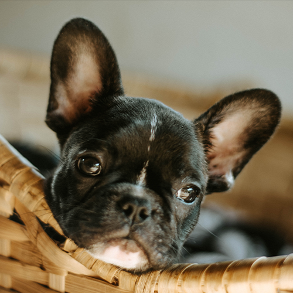

French Bulldog
프렌치불독 이란?

- 특징
- 투견이 금지되면서 불도그와 크기가 작은 테리어종을 교배하여 개량한 토이 불도그가 19세기 초 영국 노팅엄의 레이스
를 만드는 노동자들 사이에서 유행하였다. 이후 1860년대에 레이스 노동자들이 프랑스로 이주하면서 함께 전해졌고,
영국에서 환영받지 못하던 작은 크기와 박쥐귀(bat ear : 박쥐처럼 크고 곧은 귀)라고 하는 끝이 둥글고 선 귀 모양은 프랑스
상류층에게 매우 인기를 얻으며, 새로운 품종으로 개량되었다. 1885년 미국에서 공식적으로 소개된 이후 1893년
영국에서도 소개되었으며, 1912년에 프렌치 불도그라는 이름이 지어졌다. 독특한 외모로 현재까지 전 세계적으로 인기가
있으며, 특히 영국과 미국에서 인기가 많은 품종이다. - 성격 및 관리
- 밝고 다정한 성격을 가지며, 장난치는 것을 좋아하고 영리하여 다른 동물이나 사람과도 잘 어울린다. 가족과 함께하는 것을
즐거워한다. 크기가 작아 실내에서 기르기 적당하지만, 체력이 좋고 활동량이 많아 매일 산책 시켜주어야 한다.
하지만 단두종이기 때문에 덥고 습한 날씨에 격한 운동을 하면 호흡곤란이 생길 수 있으므로 주의해야 한다. -
식욕이 높아 비만에 취약하기 때문에 먹이량 조절을 하여야 하며, 간식은 급여하지 않는 것이 좋다. 머리를 포함한 몸의
앞쪽이 무거워 수영을 잘 하지 못하기 때문에 물이 많은 곳에서는 조심해야 한다. 털은 짧지만 털빠짐이 심한 편이며,
코의 깊은 주름에 피부질환이 생기지 않도록 신경써서 관리해야 한다. 건강한 편이지만 안구질환이나 피부 알레르기 등의
질환이 생길 수 있다. 수명은 10~12년이다.